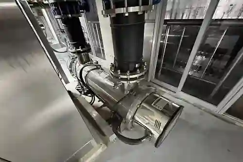
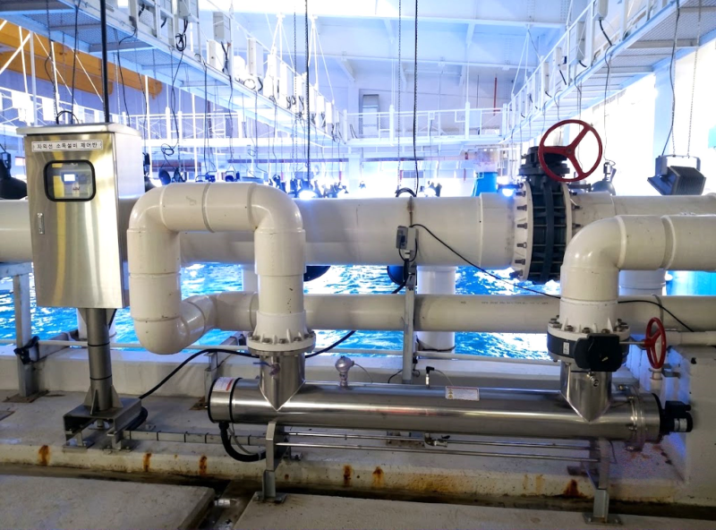
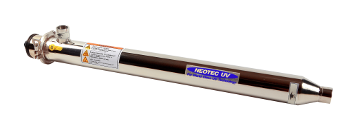

| NCL-U 시리즈 사양 |
|---|
| 램프 구성 | 1, 2, 3, 4, 6, 8, 10, 12, 14, 16, 20, 24, 28, 32 |
| 재질 | STS304 / STS 316 / STS 316L |
| 램프 형식 | 320W 저압 램프 또는 아말감 램프 |
| 세척 방식 | 자동 와이퍼 방식 |
| 운전 온도 | +5°C - + 45°C |
| 연결 방식 | PN16, DN, ANSI 150, JIS, KS, TRICLAMP |
| 사용 / 시험 압력 | 10bar / 15bar |
| 표면 처리 | 전해연마 및 부동태 처리 |
| 제어반 사양 |
|---|
| 재질 | Painted Steel, STS304, STS316 |
| 보호 등급 | IP54 / NEMA 4 |
| 제어 방식 | MICROPROCESSOR |
| 전압 / 주파수 | 120 - 230V, 50/60Hz |
| 운전 온도 | +0°C - + 50°C |
| 안정기 | 전자식 안정기 |

| NCL-P 시리즈 사양 |
|---|
| 램프 구성 | 1, 2 3, 4, 6 |
| 재질 | STS304 / STS 316 / STS 316L |
| 램프 형식 | 90W 저압 램프 또는 아말감 램프 |
| 세척 방식 | 매뉴얼 |
| 운전 온도 | +5°C - + 45°C |
| 연결 방식 | PN16, DN, ANSI 150, JIS, KS, TRICLAMP |
| 사용 / 시험 압력 | 5bar / 7bar |
| 표면 처리 | 전해연마 및 부동태 처리 |
| 제어반 사양 |
|---|
| 재질 | Painted Steel, STS304, STS316 |
| 보호 등급 | IP54 / NEMA 4 |
| 제어 방식 | ON/OFF |
| 전압 / 주파수 | 120 - 230V, 50/60Hz |
| 운전 온도 | +0°C - + 50°C |
| 안정기 | 전자식 안정기 |


개인정보 처리방침: Neotec UV는 기업 고객의 상담 및 전문 서비스 문의 처리를 위해 필요한 최소한의 개인정보만 수집합니다.
수집하는 개인정보 항목: 문의 유형, 이름, 휴대전화번호, 이메일 주소 및 문의 내용
개인정보 수집 및 이용 목적: 고객 문의 검토 및 답변, 엔지니어링 상담 지원, 지속적인 고객 커뮤니케이션을 위한 상담 이력 관리
개인정보 보유 및 이용 기간: 제출된 모든 개인정보는 접수일로부터 2년간 안전하게 보관되며, 보유 기간이 경과하면 영구적으로 파기됩니다.
Cookie Policy: Neotec UV는 쿠키 데이터를 수집, 저장 또는 추적하지 않습니다. 당사 웹사이트는 정적인 정보 제공을 목적으로 설계되었으며, 사용자 추적이나 세션 정보를 저장하지 않는 독립적인 브라우징 환경을 제공합니다.